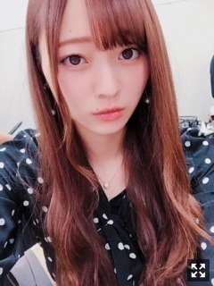
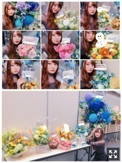
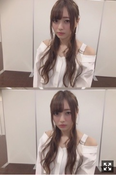
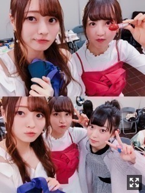

外出たら懐かしい匂いがするの
みなさまこんにちは！！
乃木坂46 ３期生の
梅澤美波です！

握手会のときのです
前髪短め
最近は稽古漬けの毎日で
とても充実しています！
きっとあっという間に
本番迎えるんだろうな〜
稽古が一日あるときは
お腹が空くから色んなものを買って
たくさん食べてしまうのが悩み( .. )
まあ食べないと体元気ならないからいっか！
ぜひ、私たちの姿を見に来てください！
今日は今月２１日にあった
個別握手会@京都パルスプラザの
写真を載せちゃいます〜
この日の３日前に
東京での握手会もあったので
両方来てくれた方は
短いスパンで会えて嬉しかったです☺︎
そして関西での握手会は
中々久しぶりだったと思うので
関西にいつも来てくれる方のお顔が見れて
とても嬉しくて安心しました☺︎
いつもありがとう(；；)

そしてお花っ！！
今回もカラフルで
とても可愛くて幸せでした(；；)
５部終わりに撮るのが
私の握手会のルーティーン？なんだけど
それが凄く好きなんだ( ¨̮ )
いつもありがとうございます。
初めての握手会のときから
お花の写真たちは
お花の写真フォルダに保管してあります。
宝物！

大人っぽくした！
オフショル着ました〜！
これにデニム！
好評で嬉しかったなあ〜
撮影者タマミンだみん
２０枚目シングルの
収録曲などが解禁されました！
私は３期生曲のトキトキメキメキ、
アンダー曲の新しい世界の２曲に
参加させていただきます
どんな楽曲になっているのか
音源が解禁されるまでタイトルから妄想してみてください∠( ˙-˙ )／
お楽しみに
そして３期生の個人PVもあります！
久しぶり個人PV！
こちらもお楽しみに！
２０thシングル「シンクロニシティ」は
４／２５に発売です！
よろしくお願い致します！

楽屋でいつも隣のふたりと
私が座ったところに
絶対ついてくるの
可愛いでしょ（笑）
絶対隣に来てくれるふたりなの
毎日稽古頑張ってますよ〜！
明日は大阪にて１９枚目シングル最後の
握手会があります！
私は僕の衝動と失恋お掃除人に参加させていただきます！
フルでの披露は全握が終わると
なかなかないと思うので
ぜひ見に来てください( ˙-˙ )౨
ペアはりりあです！うめりりです！
りりあのファンの方、
よろしくお願いします！
どんな話題でも振っていただければ
答えていきますよ〜！
そして私に会いに来て下さる方も
よろしくお願いします∠( ˙-˙ )／
楽しみにしてるよ〜
ぜひ楽しみましょう！
それと、
２０thの個別握手会が
３０枠全完売したみたいです！！
本当にありがとうございます(；；)
嬉しいです、
私に会いたいって思ってくれてる方がいるんだなって思うと
その方たちのために私も握手会楽しんでもらえるように頑張ろう！って思うし
お洋服決めるのもすごく楽しみになる！
支えてもらってばかりで
本当に申し訳ないって思うけど
そんな気持ち持ってても
ファンの方はいい気持ちしないだろうから
恩返しできるように今は頑張るのみ！
力をつける時！
２０thシングルは
求められるくらいの人間になって
見てわかる成長を遂げられるように頑張ります！
本当にありがとうございます！
お会い出来るのを
楽しみにしています！
ついんはお好きですか？
それではまた
おやすみ
夢で逢おうね〜
（笑）
ばいばい！
なにが足りないのか
自分を理解することって簡単ではないんですねっ
いつかファンの方と笑えるように頑張ります！
Original：https://www.nogizaka46.com/s/n46/diary/detail/44210?ima=4955&cd=MEMBER